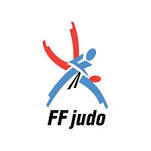

JUDO

La création
La légende dit que Jigoro Kano découvrit les principes du Judo lors d’un hiver rigoureux en remarquant que les branches des cerisiers réagissaient différemment sous le poids de la neige abondante. Les plus grosses cassaient alors que les plus souples pliaient et se débarrassaient de « l’agresseur » avec souplesse. La voie de la souplesse était née.
Plus simplement, le judo est un art martial créé en 1882, construit comme une méthode d’éducation contenant des projections ainsi que des contrôles au sol (immobilisations, étranglements et clés de coude) repris en parti du jujitsu (art martial ancestral japonais).
Evolution

En France, le judo apparaît dans les années trente, mais il se développe surtout après la deuxième
guerre mondiale sous l’impulsion de Maître KAWAISHI et de Paul BONET-MAURY, président-fondateur de la Fédération
Française de Judo en décembre 1946.
Actuellement, il y a plus de 600.000 adhérents en France.
A partir des années 60, le courant sportif devient dominant.
Chez les hommes, le judo est inscrit pour la première fois au programme des J.O. à Tokyo en 1964.
Chez les femmes, il faudra attendre les J.O de Barcelone en 1992.
La pratique
Le Judo se pratique dans un dojo.
Les tatamis délimitent une zone de combat en carré à l’aide de couleurs différentes. Cela permet d'amortir les chocs.
En compétition, les judokas sont répartis en fonction de l'âge, du sexe et du poids.
La pratique
Les ceintures sont utilisées pour évaluer le niveau du Judoka.
Les pratiquants nommés Judokas portent une tenue en coton renforcée appelée judogi.
Le judo se pratique pieds nus sur des tatamis.
Les grades (ceintures)
Les grades (ceintures) sont attribués à un pratiquant et permettent d'évaluer son niveau technique, son efficacité en combat, son degré d'ancienneté ainsi que ses qualités morales, ce qui correspond au respect scrupuleux du code moral ainsi qu'un investissement suffisant dans la pratique.
Les ceintures de couleurs ont été inventées en Angleterre au milieu des années 1920 puis introduites en France par le
professeur Mikinosuke Kawaishi.
On trouve dans l'ordre les ceintures blanche, jaune, orange, verte, bleue et marron.
Suivent les ceintures dites supérieures, respectivement noire du 1er au 5e dan, rouge et blanche du 6e au 8e dan, et
enfin rouge pour le 9 e et 10 e dan.
Symboliquement, il fut donné à Jigoro Kano, le fondateur du judo, une ceinture particulière à titre posthume, la ceinture blanche large, de la couleur des débutants pour signifier que l'on n'a jamais tout appris et qui correspond au 12e dan, sachant qu'il n'y a pas de 11e dan.
Le code moral
En proposant un développement physique, moral et spirituel, le Judo permet aux judokas de s’épanouir en harmonie avec eux-mêmes et surtout avec les autres.
Le but
En judo debout, cela se traduit selon quatre critères : chute largement sur le dos avec force, vitesse et contrôle.
Le temps d'immobilisation (au moins une des deux épaules de l'adversaire touche le tapis et que le contrôle se fasse, le buste tourné vers le tapis) en combat au sol (un abandon donne la victoire et fait bien souvent suite à une technique d'étranglement ou de clé au coude réussie).
Mon Expérience
J'ai fait du judo à Montdidier de :
1993 à 2005
Mon entraîneur était :
Daniel DIVE
Montdidier 1993
Avec ma ceinture blanche.
J'ai fait du judo à Roye de :
2005 à 2013
Mon entraîneur était :
Patrick MISTRAL
Roye 2006
Avec ma ceinture noire.
Je fais du judo à Fréjus depuis :
2019
Mon entraîneur est :
Laurent MAHE
Fréjus 2020
Reprise du judo après 6 ans d'arrêt.